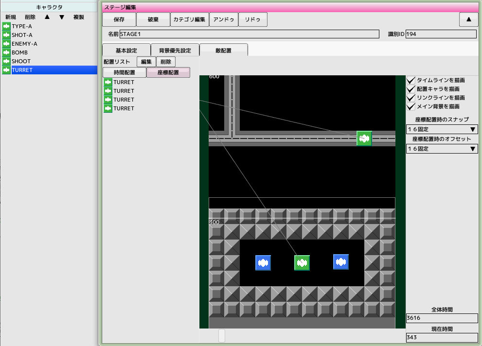
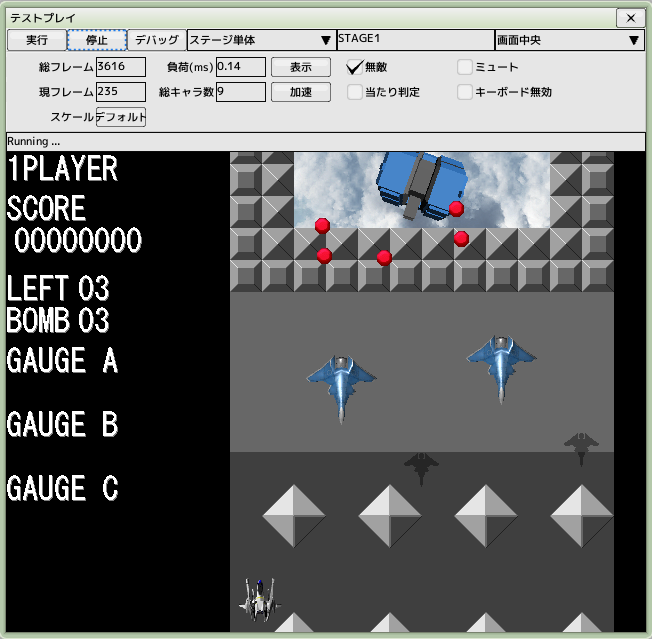

back to the original page
back to the original page
10.Stage Layout
Keep the project file created in the previous tutorial open
There are two types of parts that can be placed on the stage: characters and formation
There are two methods, time alignment and coordinate alignment, depending on the application
If you want the enemy to appear against the background, you can use coordinate placement
Time Allocation
 Open the previously created 'STAGE1' and select the enemy placement tab
Open the previously created 'STAGE1' and select the enemy placement tab
Make the overall time 3616 (number of frames)
You can change the current time with the slider at the bottom of the screen
Enable the time placement button in the placement list
Drag and drop 'ENEMY-A' in the project's character list onto the stage
The icon will be placed at the drop location and 'ENEMY-A' will appear in the placement list
You can delete a placed character by selecting a range of icons and then clicking the delete button
Placed icons can be selected and dragged to a range
Coordinate Placement

Enable the coordinate placement button in the placement list
Drag and drop 'TURRET' in the project's character list onto the stage
The icon will be placed at the drop location and 'TURRET' will appear in the placement list
Drag right to scroll, and wheel to zoom in and out for better placement
Test Play

Perform a stage unit test
Back to top of page